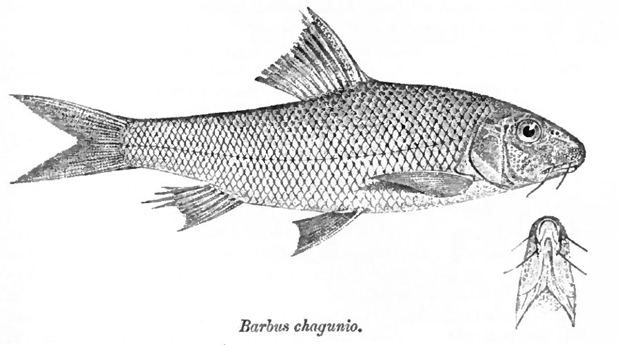

चागुनिओ कार्प मछलीChagunio Carp
Chagunius chagunio · Cyprinidae · FSH-0074

- Scientific name वैज्ञानिक नाम
- Chagunius chagunio (Hamilton, 1822)
- Family कुल
- Cyprinidae
- Hindi हिंदी
- चागुनिओ कार्प मछली
- Local names स्थानीय नाम
- chagunio carp, chagunio machhli, chaguni, galhi, chagun
- Status here यहाँ की स्थिति
- native
- Movement आवागमन
- Resident, here all year
- Known from कहाँ दर्ज
- Others have published records from the wider Awadh–Purvanchal plain, none yet from Basti–Ayodhya अवध–पूर्वांचल से दूसरों के प्रकाशित अभिलेख, बस्ती–अयोध्या से अभी नहीं
- IUCN IUCN
- not evaluated
- Review समीक्षा
- not yet reviewed
When to look कब देखें
Present all year. साल भर मौजूद।
Uses and possibilities उपयोग और संभावनाएँ
Drawn from the documented uses in the profile below, where each is labelled traditional, current or a research lead. All uses →
Tell it apart from इनसे अलग पहचानें
चागुनिओ कार्प मछली / Chagunio Carp
Chagunius chagunio (Hamilton, 1822) — Cyprinidae
चागुनिओ कार्प मछली — उत्तरी भारत की स्वच्छ, तेज बहती नदियों, पथरीले नालों और तराई की जलधाराओं में पाई जाने वाली एक अत्यंत आकर्षक, कांटेदार और फुर्तीली देशी कार्प मछली है। इसका शरीर दोनों तरफ से चपटा और पीठ उठी हुई होती है। इसकी सबसे अनूठी पहचान नर मछलियों के चेहरे और थूथन पर पाए जाने वाले नुकीले, कड़े कांटेदार दाने (ट्यूबरकल्स) हैं, जो प्रजनन काल में बहुत बड़े और उभरे हुए हो जाते हैं। इसके मुंह पर चार लंबी मूंछें होती हैं और इसकी पीठ के पंख (डॉर्सल फिन) में एक मजबूत आरीदार कांटा होता है। इसका रंग चांदी जैसा चमकीला और हल्का गुलाबी होता है तथा तराशों के किनारे काले होते हैं। यह पत्थरों पर जमी काई और जलीय कीटों को खाती है तथा ग्रामीण बाजारों में एक स्वादिष्ट खाद्य मछली मानी जाती है।
Quick Identification त्वरित पहचान
| Feature | Description |
|---|---|
| Size | Medium-sized cyprinid; reaches about 50 cm TL (Froese & Pauly 2025) |
| Body Shape | Compressed body with an elevated and arched dorsal profile (Hamilton 1822) |
| Snout & Tubercles | Snout studded with prominent, sharp nuptial tubercles, especially in adult males (Talwar & Jhingran 1991) |
| Mouth & Barbels | Subterminal narrow mouth; two pairs of long barbels (rostral and maxillary) (Talwar & Jhingran 1991) |
| Dorsal Fin | Elevated, with a strong bony spine serrated along its posterior edge; 3 unbranched and 8 branched rays (Hamilton 1822) |
| Colour Pattern | Silvery with a warm pinkish hue; scales dark-edged; dorsal and caudal fins tipped with red (Talwar & Jhingran 1991) |
| Scales | Small cycloid scales; 44 to 47 scales along complete lateral line (Talwar & Jhingran 1991) |
Field tip: Look along flowing gravel rapids and clear river runs. A compressed, pinkish-silvery carp with an elevated back, a strongly serrated dorsal spine, four barbels, small scales (44–47), and prominent facial tubercles in adult males, is Chagunius chagunio.
हिंदी: यह चांदी-गुलाबी रंग की सुंदर मछली है जिसकी पीठ उठी हुई होती है। इसके सिर और थूथन पर कांटेदार दाने होते हैं, पीठ के पंख में एक मजबूत आरीदार कांटा होता है और मुंह पर चार मूंछें होती हैं।
Morphology आकारिकी
Size as given by FishBase (Froese & Pauly 2025):
| Measurement | Range | Notes |
|---|---|---|
| Maximum length | 50 cm TL | Froese & Pauly (2025), FishBase |
| Lateral line scales | 44–47 | Small, crowded cycloid scales |
| Dorsal fin rays | iii, 8 | Third spine exceptionally strong and serrated posteriorly (Hamilton 1822) |
| Anal fin rays | iii, 5 | Last unbranched ray elongated in males (Talwar & Jhingran 1991) |
| Pectoral fin rays | i, 14–15 | Muscular and broad for riverbed stabilization (Talwar & Jhingran 1991) |
| Pelvic fin rays | i, 8 | Abdominal insertion (Talwar & Jhingran 1991) |
The body is oblong and strongly compressed laterally, with the dorsal profile rising sharply from the snout to the dorsal fin origin (Hamilton 1822). The head is relatively small and pointed. The snout is prominent and heavily overhangs the mouth; in adult males, the snout and cheeks are densely studded with large, hard, conical keratinized tubercles arranged into distinct lateral clusters (Talwar & Jhingran 1991). The mouth is narrow, subterminal, and horseshoe-shaped. Two pairs of well-developed, sensory barbels are present: the rostral barbels are slightly longer than the eye diameter, and the maxillary barbels are equal to or longer than the rostral pair. The dorsal fin carries a remarkably stout bony spine that bears strong, backward-directed serrations along its posterior edge.
Live coloration is gleaming silvery with a warm rose or salmon-pink blush along the flanks and gill covers (Talwar & Jhingran 1991). Each scale on the upper flanks has a fine black margin, giving the fish a finely cross-hatched pattern. The dorsal fin is dusky with a dark tip; the pectoral, pelvic, and anal fins are flushed with bright orange-red (Hamilton 1822).
हिंदी: शरीर दोनों तरफ से चपटा और पीठ उठी हुई होती है। नर मछली के सिर और गालों पर नुकीले कांटेदार दाने होते हैं। पीठ के पंख का कांटा बहुत मजबूत और आरी की तरह दांतेदार होता है। रंग चमकदार चांदी जैसा होता है जिस पर हल्का गुलाबीपन होता है और तराशों के किनारे काले होते हैं।
Behaviour & Ecology व्यवहार और पारिस्थितिकी
The Chagunio Carp is a rheophilic freshwater species that requires flowing, turbulent, and well-oxygenated water (Talwar & Jhingran 1991). It primarily inhabits the middle and upper stretches of rivers, rapids, rocky glides, and clear gravel runs where sustained water movement prevents sedimentation.
Adults form active, agile schools that stay close to the riverbed. Using their subterminal mouths and sensitive barbels, they poke into crevices among submerged boulders and gravel to find insect larvae and scrape off epilithic biofilms (Talwar & Jhingran 1991). During the high-water monsoon season, schools move upstream into swollen tributaries and gravel shallows to breed, returning to deep perennial river pools and gorges during the low-water winter and pre-monsoon summer. They are completely absent from stagnant muddy ponds and cannot tolerate hypoxic or heavily polluted conditions.
हिंदी: यह मछली तेज बहते, साफ और कंकड़-पत्थर वाले पानी में रहना पसंद करती है। यह झुंड बनाकर नदी की तलहटी में तैरती है और पत्थरों के बीच छिपे कीड़ों को अपनी मूंछों से खोजकर खाती है। यह गंदे और रुके हुए पानी में बिल्कुल जीवित नहीं रह सकती।
Life Cycle / Phenology जीवन चक्र
Seasonal phenology in northern Indian river systems across the agricultural year (Talwar & Jhingran 1991):
| Season / Month | Stage | Field Observation |
|---|---|---|
| June–July (Monsoon onset) | Upstream migration | Adults move into swift, pebble-bottomed tributaries (Talwar & Jhingran 1991) |
| July–August (Kharif peak) | Spawning & breeding | Spawning over clean gravel beds; male facial tubercles fully developed |
| September–November (Post-monsoon) | Juvenile recruitment | Fingerlings forage actively along shallow gravel riffles (Talwar & Jhingran 1991) |
| December–February (Rabi winter) | Deep pool retreat | Congregates in deep river scours and rock pools |
| March–May (Summer / Zaid) | Active feeding | Heavy browsing on benthic invertebrates and algal crusts |
Breeding takes place during the southwest monsoon from July through September (Talwar & Jhingran 1991). Monsoon spates, drop in water temperature, and strong currents trigger synchronous spawning. Males display vibrant pink coloration and fully erect facial tubercles during courtship. Females lay demersal, non-adhesive eggs that settle securely among coarse gravel and stone beds. The eggs hatch after several days, and the larvae shelter in protected interstitial crevices until they begin active foraging.
हिंदी: प्रजनन वर्षा ऋतु (जुलाई से सितंबर) के दौरान तेज बहाव वाले कंकड़-पत्थर वाले स्थानों पर होता है। नर मछली के कांटेदार उभार इस समय पूरी तरह विकसित हो जाते हैं। अंडे पत्थरों के बीच सुरक्षित रहते हैं और कुछ दिनों में बच्चे बाहर निकल आते हैं।
Diet and Feeding Behaviour आहार
Chagunius chagunio is a benthic omnivore and opportunistic browser (Talwar & Jhingran 1991):
Natural diet components:
- Aquatic insect larvae, including caddisflies, mayflies, midges, and stonefly nymphs gathered from stones.
- Benthic micro-molluscs, small gastropods, and bivalves crushed by pharyngeal teeth (Talwar & Jhingran 1991).
- Epilithic filamentous green algae and diatoms scraped from rocks and pebbles.
- Decaying aquatic plant fragments and benthic organic detritus.
हिंदी: यह एक सर्वाहारी मछली है। यह नदी के पत्थरों पर चिपके कीड़े-मकोड़ों, जलीय तितलियों के लार्वा, छोटे घोंघे, हरी काई और सड़े-गले पौधों के बारीक अंशों को खाती है।
Predators / Natural Enemies शत्रु
Documented natural predators in northern Indian river corridors:
- Predatory fishes: Large river catfishes like Wallago attu (Striped Catfish) and Bagarius bagarius (Goonch) prey on chagunio carps in deep runs.
- Piscivorous birds: Cormorants, grey herons, and fish eagles hunting in clear shallows and rapids.
- River mammals: Smooth-coated otters hunt schools in rocky river pools.
- Snakes: Water snakes prey on young fish in marginal vegetated eddies.
हिंदी: बोआल, गूंज, बगुले, जलकौवे और उदबिलाव इस मछली का शिकार करते हैं।
Agricultural / Human Relevance कृषि प्रासंगिकता
Nutritional and market food value: The Chagunio Carp is an esteemed food fish throughout the foothills and northern plains of India. Captured with cast nets, gill nets, and basket traps in the Ghaghara, Rapti, and Gandak basins, its flesh is firm, white, and tasty, offering high-quality animal protein, iron, and minerals to riparian households.
Ecological river health indicator: Due to its rigorous demands for high dissolved oxygen, clean gravel substrate, and unobstructed river flow, Chagunius chagunio is an exceptional biological indicator of undisturbed river ecosystems.
Traditional: A traditional food fish widely consumed in riverbank communities across northern Awadh and Purvanchal.
Today: Sold fresh in morning fish bazaars near major river ghats as a prized local carp.
Research direction (a lead, not a result): Investigating the ecological flow requirements of Chagunius chagunio in regulated rivers of eastern Uttar Pradesh.
हिंदी: यह एक बहुत स्वादिष्ट और पौष्टिक देशी मछली है जिसे स्थानीय बाजारों में अच्छी कीमत पर बेचा जाता है। चूंकि यह केवल साफ और तेज बहते पानी में रह सकती है, इसलिए इसकी मौजूदगी नदी के स्वस्थ होने का बड़ा संकेत है।
Expected Locally स्थानीय रूप से अपेक्षित
Not a field record. Written from published accounts for eastern Uttar Pradesh. No confirmed local sighting yet — if you have seen it, that is what the atlas needs.
अभी तक स्थानीय पुष्टि नहीं। यह विवरण प्रकाशित स्रोतों से है, किसी अवलोकन से नहीं।
The Chagunio Carp is expected across eastern Uttar Pradesh in perennial rivers, large flowing streams, oxbow lakes (tals), and major canal systems. Look in river pools and flowing glides from August through January. GBIF holds published records from the wider Awadh–Purvanchal plain, none yet from Basti–Ayodhya. A voucher photograph showing the elevated pinkish-silvery body, serrated dorsal spine, four barbels, small scales (44–47), and facial tubercles, submitted via the About page, would confirm the first local documentation for the project area.
Distribution वितरण
Global range: Native across northern South Asia, occurring throughout India, Nepal, and Bangladesh (Talwar & Jhingran 1991).
In India: Distributed throughout the Ganges and Brahmaputra river drainages, from Punjab through Uttar Pradesh, Bihar, West Bengal, and Assam (Menon 1999).
In Uttar Pradesh: Recorded in the Ganges, Ghaghara, Gandak, Sarda, and Rapti river networks.
In Basti district / eastern UP: Expected as a native resident in the perennial channels and deep pools of the Ghaghara and Kuwano river basins.
हिंदी: यह भारत, नेपाल और बांग्लादेश की प्रमुख नदी प्रणालियों में पाई जाती है। उत्तर प्रदेश में यह गंगा, घाघरा, गंडक और राप्ती जैसी नदियों के मुख्य प्रवाह में मिलती है।
Research Questions शोध प्रश्न
- What is the seasonal histological cycle of the snout tubercles in Chagunius chagunio, and do they serve a tactile role during courtship? / क्या नर मछली की थूथन के कांटेदार दाने केवल प्रजनन काल में ही विकसित होते हैं?
- What are the critical water velocity preferences of adult and juvenile Chagunius chagunio across seasonal hydrological cycles?
- What is the dietary overlap between Chagunius chagunio and co-occurring mahseers (Tor tor) in gravel-bed river glides? / पथरीली नदियों में यह मछली तोर महासीर के साथ भोजन का बंटवारा कैसे करती है?
- How resilient is Chagunius chagunio to elevated summer water temperatures in shallow alluvial rivers of eastern UP?
- How severely do instream gravel and boulder mining operations degrade the benthic spawning grounds of this species?
Similar Species मिलती-जुलती प्रजातियाँ
| Species | Key Differences | |
|---|---|---|
| Chagunius chagunio (Chagunio Carp) | Strongly serrated dorsal spine; snout with sharp tubercles; four barbels; 44–47 scales (Talwar & Jhingran 1991) | |
| Systomus sarana ([[olive_barb\ | Olive Barb]]) | Dorsal spine serrated; snout lacks tubercles; body olive-green; 30–34 lateral line scales (Talwar & Jhingran 1991) |
| Tor tor ([[tor_mahseer\ | Tor Mahseer]]) | Dorsal spine smooth (never serrated); body much larger; only 22–27 massive lateral line scales |
| Bangana dero ([[dero_barb\ | Dero Barb]]) | Snout with deep transverse groove; lacks strong serrated dorsal spine; only one pair of minute barbels |
Field rule: A pinkish-silvery carp with an elevated back, a stout serrated dorsal spine, four barbels, small scales (44–47), and sharp facial tubercles in adult males, is Chagunius chagunio.
हिंदी: ओलिव बार्ब के तराशे बड़े होते हैं (30–34) और चेहरे पर कांटे नहीं होते, जबकि चागुनिओ कार्प के तराशे छोटे होते हैं (44–47) और नर के चेहरे पर नुकीले कांटेदार दाने होते हैं।
Taxonomy & Classification वर्गीकरण
Original description. Described by Francis Hamilton in 1822 as Cyprinus chagunio in An Account of the Fishes Found in the River Ganges and Its Branches, page 295. Type locality: Yamuna River and northern rivers of Bihar and Bengal.
Subspecies. Monotypic — no subspecies are recognized across its continental range.
Family and order placement. Order Cypriniformes, family Cyprinidae, subfamily Cyprininae (or Barbinae). The genus Chagunius Smith, 1938, comprises specialized barbs with serrated dorsal spines and facial tubercles.
Phylogenetic notes. Chagunius chagunio is the type species of the genus Chagunius, exhibiting morphological affinities with both Tor and Systomus while maintaining distinct cranial and osteological features (Talwar & Jhingran 1991).
IUCN status rationale. Not evaluated (NE) on the global IUCN Red List of Threatened Species. It maintains widespread, viable populations across South Asian river systems.
हिंदी: इसका वैज्ञानिक नाम Chagunius chagunio है और यह Cyprinidae परिवार की सदस्य है।
Photo Gallery फोटो गैलरी
No photos yet — add field photos to media/species/chagunio_carp/ and run node scripts/sync_photos.js.
Photos needed आवश्यक फोटो
- [ ] Lateral view of adult specimen showing elevated pinkish-silvery body and serrated dorsal spine (गुलाबी-चांदी जैसे शरीर और आरीदार कांटे की पूरी तस्वीर)
- [ ] Close-up of male head showing prominent facial tubercles and barbels (नर के चेहरे के कांटेदार दानों और मूंछों का स्पष्ट दृश्य)
- [ ] Underside of head showing narrow horseshoe-shaped mouth (मुंह का निचला दृश्य)
- [ ] Live specimen swimming in a clear gravel run (स्वच्छ पानी में तैरती मछली)
References संदर्भ
- Hamilton, F. (1822). An Account of the Fishes Found in the River Ganges and Its Branches. Archibald Constable and Company, Edinburgh, p. 295.
- Talwar, P. K. & Jhingran, A. G. (1991). Inland Fishes of India and Adjacent Territories, Vol. 1. Oxford & IBH Publishing Co., New Delhi, pp. 299–300.
- Menon, A. G. K. (1999). Check list - fresh water fishes of India. Records of the Zoological Survey of India, Occasional Paper No. 175, p. 77.
- Jayaram, K. C. (2010). The Freshwater Fishes of the Indian Region, 2nd edition. Narendra Publishing House, Delhi.
- Froese, R. & Pauly, D. (Eds.) (2025). FishBase. World Wide Web electronic publication.
- GBIF Occurrence Data — Chagunius chagunio, India (2025).
Source file: species/fauna/fish/chagunio_carp.md